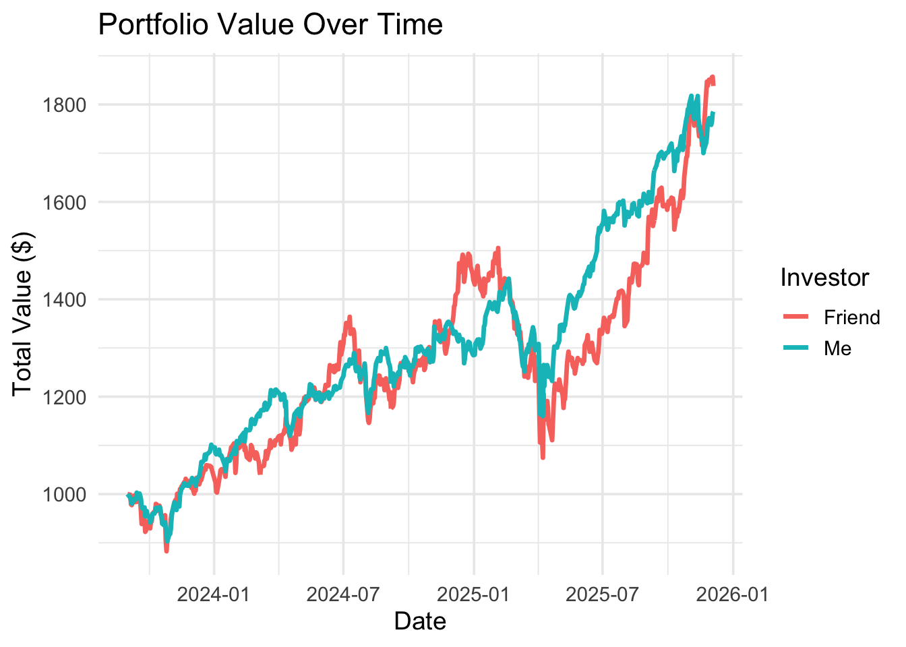
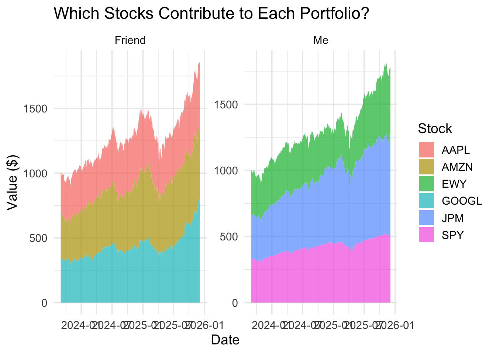

stocks_tidyquant
Code

Honestly, I thought my portfolio would fall far behind my friend’s… but no. We basically traded punches the whole time, and somehow we ended up pretty close. I chose stocks that are still big but not as big as the companies my friend did. My friend’s tech stocks kept randomly jumping like they drank a Monster Energy, which pushed him ahead at a few points. I guess thats the big companies for some seasons. In the end he still beat me by a bit, but I was closer than I thought.
Code
stock_contributions <- price_value %>%
mutate(owner = if_else(symbol %in% friend_stocks, "Friend", "Me")) %>%
group_by(owner, symbol, date) %>%
summarise(value = sum(value), .groups = "drop")
ggplot(stock_contributions,
aes(x = date, y = value, fill = symbol)) +
geom_area(alpha = 0.7) +
facet_wrap(~ owner, scales = "free_y") +
labs(
title = "Which Stocks Contribute to Each Portfolio?",
x = "Date",
y = "Value ($)",
fill = "Stock"
) +
theme_minimal(base_size = 14)
For the stock-breakdown graph, the story becomes pretty obvious. My friend’s portfolio was basically being dragged to victory by Apple and Amazon like they were unstoppable gym bros. Every time those two flexed, his whole portfolio shot up. Meanwhile, my stocks were doing the “stable and sensible adult” thing. SPY and JPM showed up consistently, and EWY tried its best but I had to represent KOREA. So, his huge tech companies did all the heavy lifting, while mine just jogged steadily along.